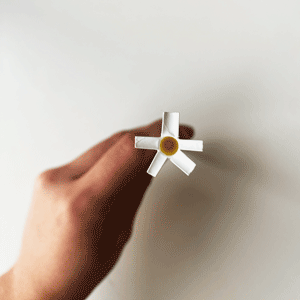
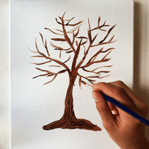
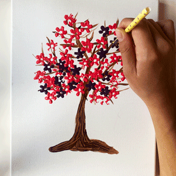

Lav flotte simple mønstre med et sugerør
Det skal du bruge
- Din fortrukne maling
- Sugerør
- Lærred eller papir
Det behøves ikke altid at være pensler man skal male med.
I denne video viser jeg et eksempel på, hvordan et sugerør,
kan bruges til, at lave flotte simple blomster.
I mit tilfælde bruger jeg dem til, at lave et farverigt træ.
Men blomstrende kan bruges til meget mere,
det er kun din fantasi der kan sætte grænserne.
Maling med sugerør er et nemt og hurtigt projekt.
Det er sjovt for både store og små og er derudover et rigtig godt begynder projekt.
God fornøjelse.
Step-by-step-guide

1. Du skal starte med at klippe 2 sugerør i enden.
Jeg har klippet dem ud i 5, så de heller ikke bliver for tynde,
og dermed sværere at arbejde med.

2. Derefter skal du male skelettet til dit træ.
Start med at male stammen, og bevæg dig op i lodrette strøg.
På den måde får du noget spil i din maling, og en bark-lignende effekt.
Når du maler grene/kviste, er det vigtigt at du maler med løs hånd.
Vi ønsker ikke at grenene skal være for tydelige,
da de kun skal give effekt bag blomsterne/bladene.

3. Nu er du klar til at male med dit sugerør, og lave de her flotte nemme blomster.
Hvis du vælger at blande maling, husk da at blande rigeligt.
Det kan være svært at ramme den samme farvetone,
hvis du ikke har nok i første portion.
Det skal kun være "grenene" på dit udklippet sugerør,
der er dækket af maling. På den måde får du et lille hul i midten af din blomst.
Herefter trykker du blot sugerøret med maling på dit lærred, indtil du syntes dit træ har blomster nok.